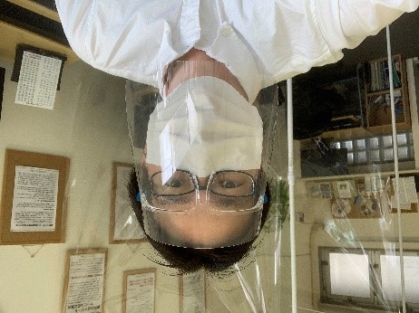
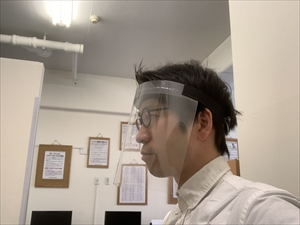
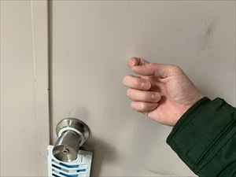
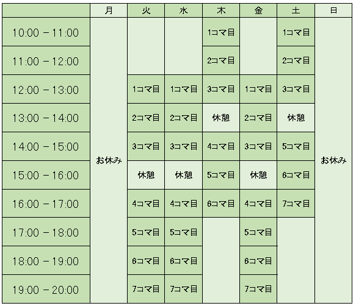

生徒様専用ページです！
メニュー一覧
授業予約ページ

空き状況の確認と
授業の予約を行えます。

LINE公式

教室からのお知らせを受け取れる
LINE公式アカウントはじめました！
教室からのお知らせ
新型コロナウイルス感染拡大防止のための「教室臨時休校」に関するお知らせ（５月最新版）
キュリオステーション菊川店の生徒の皆様へ
平素より教室をご利用いただきまして誠にありがとうございます。また、感染拡大防止に日々ご尽力されている皆様、そして日々の暮らしを支えてくださっている皆様に引き続き、深く感謝申し上げます。
キュリオステーション菊川店では、新型コロナウィルス感染拡大防止音ため4月11日（土）～5月6日（水）までを教室臨時休校とさせていただきましたが、東京においては、引き続き自粛要請が5月31日（日）まで出されたことを受けまして、教室もこの措置にならい、5月7日（木）～5月31日（日）まで臨時休校を延長いたします。
休校期間（延長）
５月７日（木）～５月３１日（日）
また、休校期間の授業料につきましては、すでに頂いております４月分の授業料を５月分へ振替させていただくたく存じます。ご了承のほどよろしくお願いいたします（５月分の授業料の口座振替はございません）
生徒の皆様にはご迷惑をおかけいたしますが、何卒ご理解を賜りますようお願い申し上げます。
※今後の新型コロナウイルス感染症の感染状況によっては、休業期間を変更することがございます。都度の変更がある場合は、こちらのホームページ等にて改めてのお知らせをいたしますのでご面倒をおかけしますがご確認をお願い致します。
皆様のご健康を心よりお祈り申し上げます。
キュリオステーション菊川店 矢野
教室のコロナ対策
対策その①座席レイアウトを変更しました。
お越しになったお二人の方との距離、矢野との距離が十分にとれるようレイアウトを変えました。また、皆さんと矢野の間にOPPフィルムのベールを作る予定です。互いの飛沫を気にせずまなっぶことができるかと思います。現時点で、OPPフィルムが届いていないため、フェイスガードを着用でご対応いたしますフェイスガードの作成方法は、youtubeで医療関係者の方がアップロードされていたものを参考に手作りしました。ぜひ必要な方はご参照ください。
https://www.youtube.com/watch?v=G8rBBidkKQo&t=5s

対策その②マスク着用での入店および入店・退店時の手の消毒のお願い
教室へお越しの方はマスクを必ず着用していただくことにしました。また、入店後、教室で用意した消毒液（アルコールor次亜塩素酸水どちらかを選択）で手を消毒していただいてから授業を行って頂きます。
対策その③入店方法を変更しました。
入り口は正面の自動ドアと自転車置き場側のドアと二つあるのですが、それぞれのドアからお入りいただくことで、生徒様同士が接触しないようにいたしました。その際、お手数ではございますが、駐輪場側からお入りになる生徒様におかれましては、扉をノックしていただき、矢野が扉を開けるようにしたいと思います。お帰りの際も、扉は矢野がお開けいたしますので、ご協力お願いいたします。

対策その④キーボード・マウスの消毒の徹底
キーボードとマウスの消毒は、授業が終了するごとに行います。
対策その⑤十分な換気の実施
給気側として自動ドアの隙間から空気を入れ、排気側として換気扇と換気扇横の窓を開放することで、十分な換気が行えるようにいたしました。また、その際、虫などが入らないようにするために、自動ドアの隙間と窓には、網戸を張り、虫などが入らないように配慮いたしました。
対策その⑥テキストにフィルムを張り、消毒できるようにしております。（現在進行中）
図書館の本に施されているカバーを教室のテキストにも施しました。カバーフィルムがあるので、こちらのテキストも、授業が終わり度に次亜塩素酸水で消毒を行うことが可能となりました。（まだ一部ですが、これからちょっとずつすべてにカバーを施していく予定です！）
うまく貼るのに苦戦中です！
当面の学び方につきまして
◎ご自宅からでも学べるように（質問できるように）
①電話での質疑応答
②テレビ電話での質疑応答
③わかりにくい点やご自分ではどうしていいのかわからないような場合にご自宅のパソコンの画面をお見せいただける画面共有で質疑応答
④Googleリモートデスクトップの機能を利用して、教室のパソコンにアクセスしていただき、教室の画面で学べる。
以上の4つの遠隔授業の方法を準備しました。
テキストなどを用いるのではない場合でも、取得コースの如何に関わらず、ご自身で作成された資料の中からわからない点があれば、操作やその他のデザインなどのどのような点についてもお応えいたしますので、お気軽にご自宅からご質問をしていただければと思います。取得コースの如何に関わらずというのは、あくまでも感染拡大防止措置として自粛要請を受け入れている間のみとなりますのでご理解のほどよろしくお願い申し上げます。日頃、ちょっとコースが違うから聞けないなぁと思っていたものがあった方や教室にないソフトの質問なんだよなぁというものも矢野が答えうる限りはご対応いたしますので、大変とは思いますが、ぜひ遠隔からの授業や質問に挑戦してみてください！
※遠隔授業を行うにしてもどう準備をしたらよいかわからないよという方もいらっしゃるかと思いますので、遠隔サービスを始めるためのサポートの時間も設けましたので、ご安心いただければと思います。（詳細は遠隔サポートについての項でお話しております）
◎1コマ60分：１名様づつで、延長はございません。
今までは席が空いていた場合、次の時間も延長できましたが、当面の間は延長が無い状態で１コマ60分の中で、ご質問にお答えしていこうかと思っております。
◎当面の時間割を変更いたしました。
今回の変更に伴い、１度に学べる人数が減ったことを考慮しまして、下記の時間割でご対応することといたしました。

お時間は、朝から夜までとなりましたので、ご都合のよい時間にご予約いただければと思います。ご予約は、電話とホームページからできるようにいたしました。教室の予約状況も教室ホームページから確認できるようにしました。（←詳細は、下記でご説明いたします。）
今まで通り、わからないことがある際にお電話でも構いませんが、お電話がつながらないこともあるかと思いますので、改めてお電話をかけていただくようなことがでてくるかと思いますのでその点ご不便おかけしますことをご了承くださいませ。
今回、ご自宅にいらっしゃる皆様のトラブルにもご対応させていただけるようにいろいろな方法を学びましたので、ご自宅からのご質問やパソコンのトラブルには今まで以上にきめ細かくご対応できるのではないかと考えております。その反面、教室へアクセスしていただき、授業を行うといった新たな取り組みでの授業やサポートを行うこともあり、どなた様においても、お手間をとらせてしまうことが予想されます。利便性は損ねないよう極力配慮したいと思いますので、ご寛容に応対していただけますと助かります。
遠隔サポートにつきまして
遠隔サポートには、2つの意味がございます。一つは、ご自宅やお仕事場から授業や質問をしていただく文字通りの離れた方に対するサポート。そして、二つ目は、その遠隔サポートをやってみたいけれど、どうやっていいのかわからないんだよねという遠隔サポートの準備やわからないことに対してサポートを行う、遠隔サポートができるようにするためのサポートです。この二つ目のサポートこそ、私がお役に立てるものなのではないかと考えております。遠隔サポートツールを使える準備が整はないと、遠隔授業そのものができないからであります。
今回何人かの生徒さんからお電話でお問合せをいただき、
『仕事のためにZOOMを始めたいけど、どう参加していいのかわからない。また、どう招待したらよいのかわからない！』
『テレビ電話に招待されたけど、自分も登録をしなくてはいけないの？』
『どんな仕組みになっているのかわからないからちょっと怖い』
などのご意見をいただきました。私も今回のお休み中にいろいろな遠隔サポートツールを使ってみて、バリエーションの多さに頭が混乱しました。しかし、使ってみるとなるほど便利でご自宅にいながらの生徒さんにいろいろとパソコンのアドバイスをさせていただくのにはよいものかもしれないなと思いました。それと同時に、始めるにあたって、しかも自分が相手の招待する場合には初めに諸々の登録があるので、ちょっと始めるときにはわかりにくいだろうなと思いました。招待される方の場合も、登録は必要がないけれど、パソコンにそれらの遠隔サポートツールをインストールしなくてはいけないので、いずれにしてもいくつかの手間が発生するなと思いました。
マニュアルをインターネットで見ながら、なんとかやれたということであればよいのですが、慣れない中で自分だけでそれらの操作を進めるのは容易ではないと思いましたので、遠隔サポート導入のためのサポートもご連絡をいただければ、コースに関係なく、どなたにもご説明をさせていただこうと考えております。電話でご対応させていただこうかと考えております。質問したい生徒様はまずは時間割から都合のよい時間をご予約いただき、
①利用されたい遠隔サポートツールは何か？
②ご自身が招待するのか？それとも参加するだけなのか？
などをお聞きして、順番に必要なものをご説明していこうと思います。わからないソフトでもどんどん調べしてお応えしたいと思います。ちなみに、この休業期間中に矢野が利用できるようになったものは、
①遠隔会議システムの『ZOOM』（ニュースなどで聞いたことがあるかたもいるかもしれませんね！）
②マイクロソフト社の『Teams』
③同じくマイクロソフト社の『skype』
などですが、おっしゃっていただければ可能な限りお使いのソフトに応対いたします。たぶん、なんでもいけると思います。なせば何とか成るで頑張ります！ご説明が長くなる場合に、お電話代がかかってしまうかもしれません。申し訳ございませんが、丁寧にご対応したいと思います。自分で設定ができたという方で試したいという方は、授業の予約をしていただき、矢野を練習台としていただければと思います。仕事場やご自身及びご家族の方が困っているという方も、皆様がお問合せをいただければ、ご質問にお答えいたしますので、ご活用ください！
矢野より皆さまへ
もし緊急事態宣言が終わって、授業ができるようになるのだったら、こうやっていこうと皆さまのご自宅からでもご質問していただけるように時間割を変更したり、できることを追加してみたりといろいろと準備を行ってまいりましたが、実際には前回のお手紙でも書かせていただいた通り感染者数が減らず緊急事態宣言が延長となってしまい、非常に残念です。
しかし、今回行う遠隔での授業、取得コースの有無にかかわらない問い合わせへの応対、そして、リモートサポートそのものに関するご質問にお答えするなどの新たな取り組みを行うことで、なかなか忙しく普段教室をご利用いただきにくい状況にあった方々のお力にもなれるのではないかと考えております。ぜひ、奮ってご活用いただければと存じます。
半月ほど時間があったにも関わらず、直接のご連絡を教室から差し上げることができず申し訳ございませんでした。この５月は、一度皆様へお電話でのご連絡をさせて頂こうと考えております。現在のお困りごとや矢野にやってもらいたいことなどがあれば、お声をいただきたいと考えております。また、今回お手紙に書かせていただきました内容に関しましてもご意見をいただければ大変ありがたいです。
お電話が難しい方にはメールでご連絡をさせて頂こうかと思います。皆様からいただいたアドバイスを参考として、6月以降の教室運営へ反映させていこうと思います。
LINE公式アカウントはじめました！
LINE公式アカウントに登録をいたしました。台風の時も今回もそうですが、突発的な教室の休校が発生する場合にお知らせできるツールがあると便利であると思いましたので今回LINE公式アカウントを取得いたしました。教室の生徒様のみが登録できるようになっております。基本的には、教室のお知らせなのですが、昨今のコロナウィルスに関する教室運営に関する内容が多くなるかと思います。
下記に教室公式アカウントのQRコードの画像と『友達追加ボタン』を配置しましたので、ご利用ください。また、登録の仕方がわからないよと言う方は、ご連絡いただければ、お応えいたします！
↑パソコンからご覧の方は上記QRコードでの登録が便利です！
↑スマホでご覧の方は、こちらの友達追加ボタンをタッチすると、LINEに登録ができます！